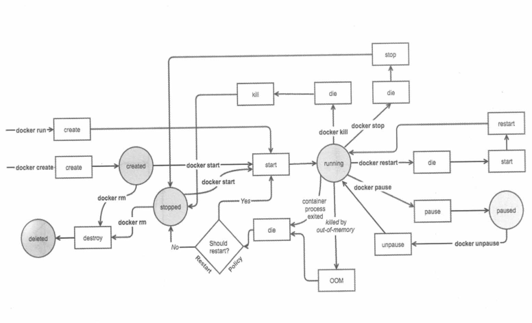
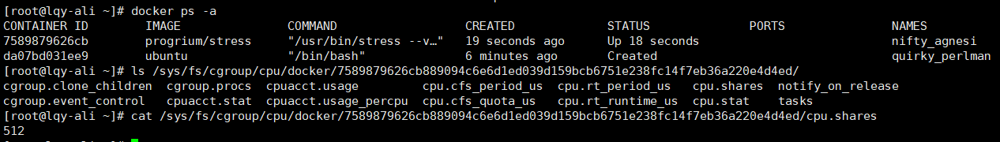

运行容器
三种方式指定容器启动 时执行的命令：
1.CMD
2.ENTRYPOINT
3.docker run
docker ps或docker container ls：查看Docker host中当前运行的容器
-a会显示所有状态的容器。
容器长期运行
容器的生命周期依赖于启动时执行的命令，只要该命令不结束，容器就不会退出。
docker run image /bin/bash -c "while true;do sleep 1;done"
while语句让base不会退出，但占用了一个终端。
加上参数-d以后台方式启动容器。
docker run -d image /bin/bash -c "while true;do sleep 1;done"
容器启动返回终端，返回一串容器ID（容器的长ID）
--link参数
能够进行容器间安全的交互通信，使用格式
name:alias
可在一个docker run命令中反复使用该参数
docker run --link redis:redis --name console ubuntu bash
解析：
在Ubuntu镜像上启动一个容器，并命名为console，同时将新启动的console容器连接到名为redis的容器上。在使用--link选项时，连接通过容器名来确定容器，建议启动容器时自定义名称
优点：
不但可以避免容器的IP和端口暴露到外网所导致的安全问题，还可以防止容器在重启后IP地址变化导致的访问问题。原理类似DNS服务器域名和地址映射，当容器IP地址发生变化，Docker会自动维护映射关系中的IP地址
docker run -it --name redis-slave1 --link redis-master:master redis /bin/bash
#容器内查看/etc/hosts文件
cat /etc/hosts
可以将--link设置可以理解为一条IP地址的单向记录信息，因此在搭建容器应用栈时，需要注意各容器节点的启动顺序，以及对应的--link参数设置。
docker ps查看两个字段
CONTAINER ID
容器的短ID，是长ID的前12个字符
NAME
容器的名字，启动时加--name显式命名，重命名容器可执行docker rename。不指定则docker会自动分配
借助短ID停止容器
docker stop 短ID
通过while启动容器无意义，一般通过后台启动，即-d
两种进入容器的方法
docker attach
可以连接到正在运行得容器，观察该容器得运行情况或与容器得主进程进行交互
通过"长ID"attach到容器的启动命令终端
注：通过Ctrl+p，然后Ctrl+q组合键退出attach终端
docker exec
docker exec -it 短id bash1.-it以交互模式打开pseudo-TTY，执行bash，其结果打开一个bash终端
2.进入到容器中，容器的hostname就是短ID
3.可以类似Linux一样执行命令，ps -elf显示了容器启动进程while以及当前的bash进程
4.执行exit退出容器
exec常规格式
docker exec -it <container> bash|sh
attach VS exec
1.attach直接进入容器启动命令的终端。不会启动新的进程
2.exec在容器中打开新的终端，并且可以启动新的进程
3.如果想直接在终端查看启动命令输出用attach，其余用exec
单纯想查看启动命令输出也可以用以下
docker logs -f 短ID
指定容器三种方式
短ID
长ID
容器名称
容器分类
按用途容器分两类
服务类（多提供服务）
以daemon形式运行，对外提供服务，比如数据库等，通过-d以后台方式启动，exec -it进入容器排查问题。
工具类（多使用基础镜像）
能提供临时的工作环境。以run -it运行，如下
docker run -it busyboxrun -it作用：在容器启动后就直接进入。执行exit退出终端且停止容器。
stop/start/restart容器
容器在docker host上实际上就是一个进程docker stop：向该进程发送一个SIGTERM信号。
docker stop image-name
docker kill：向容器进程发送SIGKILL信号
docker kill image-name
docker start：处于停止状态的容器，重新启动。(会保留容器第一次启动时的所有参数)
-i参数来开启交互模式，始终保持输入流开放
-a参数附加标准输入输出和错误输出
docker start image-name
docker restart：本质是依次执行docker stop和docker start
容器可能会因某种错误而停止运行，对于服务类容器，我们希望它自动重启启动容器时设置--restart即可。例子如下：
docker run -d --restart=always httpd
docker stop和docker restart使用-t来设定容器停止前得等待时间
pause/unpause容器
docker pause image-name 容器暂停工作状态，不占用CPU资源
docker unpause image-name 恢复运行
删除容器
使用一段时间后可能会有大量已经退出的容器。依然会占用Host得文件系统资源，如果确认不再启用，可以删除
docker rm imageId1 imageId2
docker rm一次可以指定多个容器，删除所有已经退出得容器，可以用以下命令
docker rm -v $(docker ps -aq -f status=exited)
State Machine
容器各种状态转换

1.先创建容器，稍后启动
docker create httpd 容器处于Created状态
docker start containerId 以后台方式启动容器
docker run=docker create+docker start
2.只有当容器启动进程退出时，--restart才有效，举例
启动进程正常退出或发生OOM，此时Docker根据--restart策略判断是否需要重启容器。
如果容器时因为执行docker stop或docker kill退出，则不会自动重启
资源限制
内存限额
控制容器内存使用量
1.-m或--memory：设置内存得使用限额，例如100MB，2GB
2.--memory-swap：设置内存+swap得使用限额
docker run -m 200M --memory-swap=300M ubuntu
允许容器最多使用200M的内存和100MB的swap。
默认两个参数为-1，即对容器内存和swap的使用没限制
docker run -m 200M --memory-swap=300M ubuntu --vm 1 --vm-bytes 280M
--vm 1:启动1个内存工作线程
--vm-bytes 280M：每个线程分配280MB内存
因为280M在300M之内，所以工作线程能正常工作，过程：
1.分配280
2.释放280
.......
5.一直循环。。。
分配的内存超过限额，线程报错，容器退出。
启动容器时只指定-m没指定--memory-swap，则--memory-swap默认为-m的两倍
docker run -it -m 200M ubuntu =>docker run -it -m 200M --memory-swap=400M ubuntu
容器最多使用200MB物理内存和200MBswap。
CPU限额——类似设置容器使用CPU的优先级
默认设置下，所有容器平等使用host CPU资源并且无限制
Docker通过-c或--cpu-shares设置容器使用CPU的权重。不指定默认1024.
与内存不同，设置的CPU权重不是绝对数量，而是相对的。
某容器能分配的CPU取决于它的cpu share占所有容器cu share总和的比例。
docker run --name container-A -c 1024 ubuntu docker run --name container_B -c 512 ubuntu
注意：权重分配CPU只发生在CPU资源紧张的情况下。
--cpu用来设置工作线程的数量。
docker run --name conb -it -c 1024 progrium/stress --cpu 2
Block IO带宽限额
限制磁盘的读写，docker通过设置权重、限制bps和iops控制容器读写磁盘带宽
目前只对direct IO（不使用文件缓存）有效
- --blkio-weight
改变容器block IO优先级，设置的是相对权重，默认500
- 限制bps(byte per second/每秒读写数据量)和iops(io per second/每秒IO的次数)
--device-read-bps:限制读某设备的bps
--device-write-bps
--device-read -iops
--device-write-iops
docker run -it --device-write-bps /dev/sda:30M ubuntu
time dd if=/dev/zero of=test.out bs=1M count=800 oflag=direct
dd测试容器中写磁盘的速度，oflag=direct指定用direct IO方式写文件才有效。
实现容器的底层技术
cgroup Conrol Group
实现资源限额
前面的资源限制操作就是在配置cgroup
/sys/fs/cgroup/cpu/docker，以容器长ID命名
[root@lqy-ali ~]# docker run -it --cpu-shares 512 progrium/stress -c 1
stress: info: [1] dispatching hogs: 1 cpu, 0 io, 0 vm, 0 hdd
stress: dbug: [1] using backoff sleep of 3000us
stress: dbug: [1] --> hogcpu worker 1 [6] forked

/sys/fs/cgroup/cpu/docker
/sys/fs/cgroup/memory/docker：内存的cgroup配置
/sys/fs/cgroup/blkio/docker：Block IO的cgroup配置
namespace
实现容器间资源隔离。
namespace管理着Host中全局唯一的资源，并可以让每个容器都觉得只有自己在使用它。
6个namespace:
mount namespace:让容器看上去拥有整个文件系统
UTS namespace:让容器拥有自己的hostname，默认容器的hostname是短ID，通过-h或-hostname参数设置
IPC namespace:让容器拥有自己的共享内存和信号量来实现进程间通信，跟其他容器隔离
PID namespace:容器有自己独立的一套PID (ps axf)
Network namespace:让容器有独立的网卡、IP、路由
User namespace:容器可管理自己的用户，host不能看到容器创建的用户
namespace的4种方式
setns():加入一个已经存在的namespace
clone():在创建新进程的同时创建namespace
unshare():在原先进程上进行namespace隔离
常用容器的操作指令
create:创建容器
run:运行容器
pause:暂停容器
unpause:取消暂停继续运行容器
stop:发送SIGTERM停止容器
kill:发送SIGKILL快速停止容器
start:启动容器
restart：重启容器
attach:attach到容器启动进程的终端
exec:在容器中启动新进程，通常使用-it
logs:显示容器启动进程的控制台输出，用-f持续打印
rm:从磁盘中删除容器